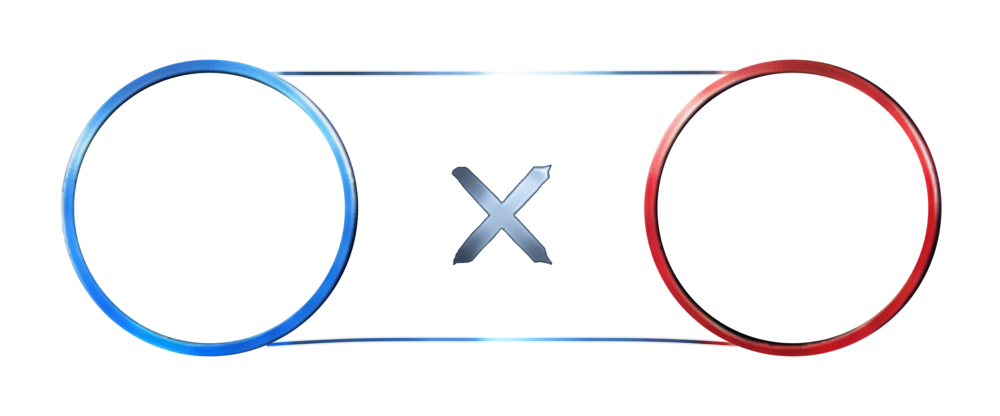

検出シーン
表示例 6件 / 出力チェック 4件
✓
12:34BLUE
トリプルキル✓
15:02RED
キル✓
18:21BLUE
アシスト✓
22:10RED
ダブルキル26:48BLUE
キル30:12RED
アシスト選択＝映像確認
✓＝動画に含める
Studio・シーン詳細
12:34.00
映像配置例 / LoL未接続カメラ未適用・実機確認は未実施目標144Hz / 実測 — fps
詳細編集
このシーンの設定
従来の手動カメラ
選んだスタイルと数値を使用
固定視点＋自動構図補正
視点を保ち、構図を補正
フルオートシネマ
確認済み候補のみ。候補なしは固定視点
キル演出

No.083 A
✓ 枠は正式合格同名FXは確認用
確認用素材：使用しない / FX：OFF
フレーム・FX・登場を選ぶ選択シーンとキル前後
実装済みの選択・トリムを再整理
00:0005:0010:0015:0020:0025:0030:00
検出シーン
キル前秒キル後秒